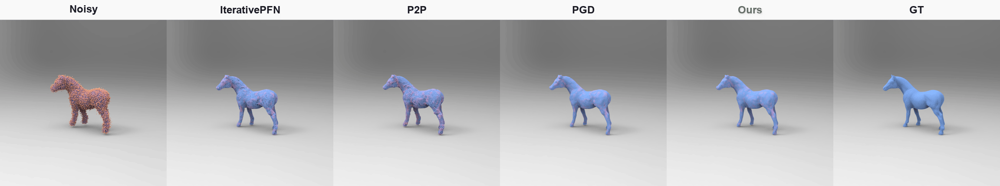
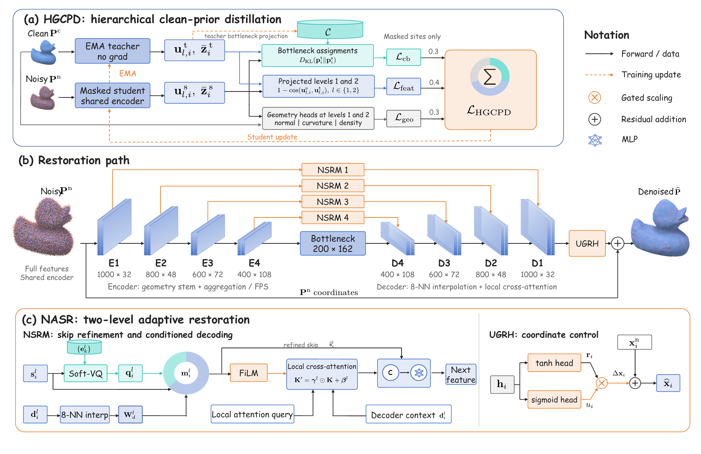
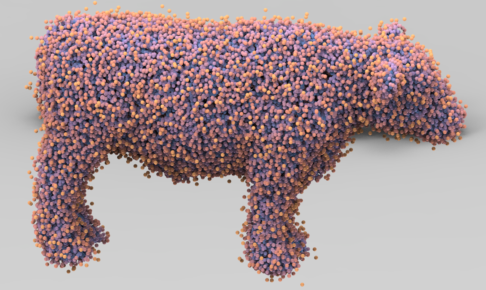
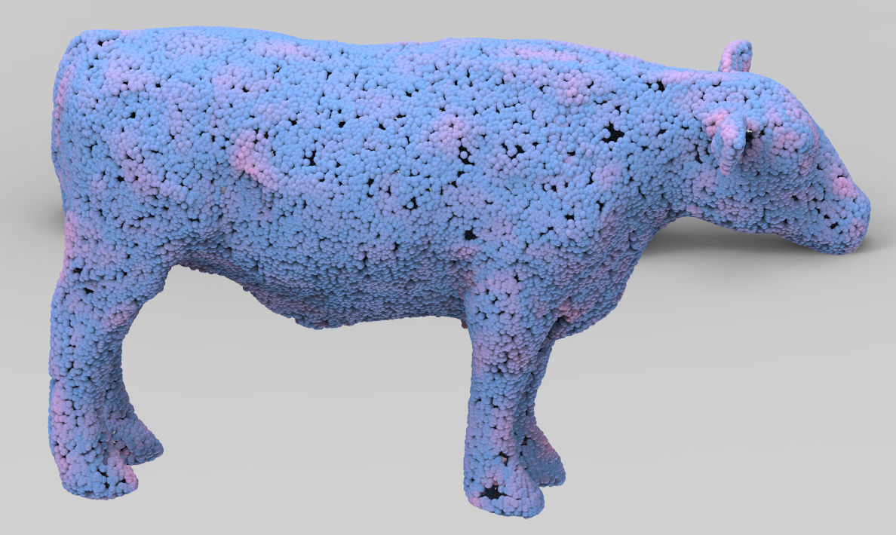
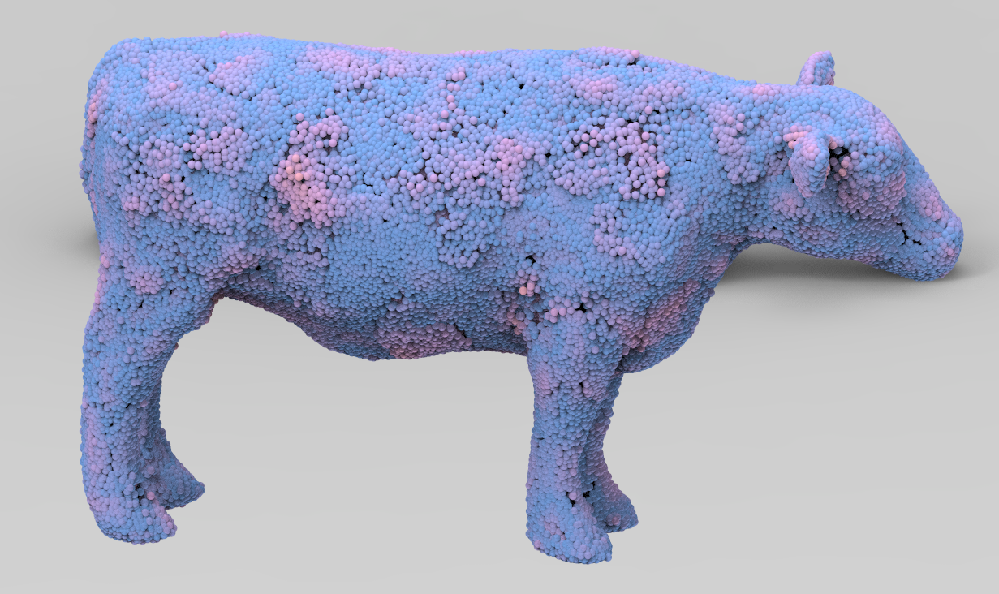
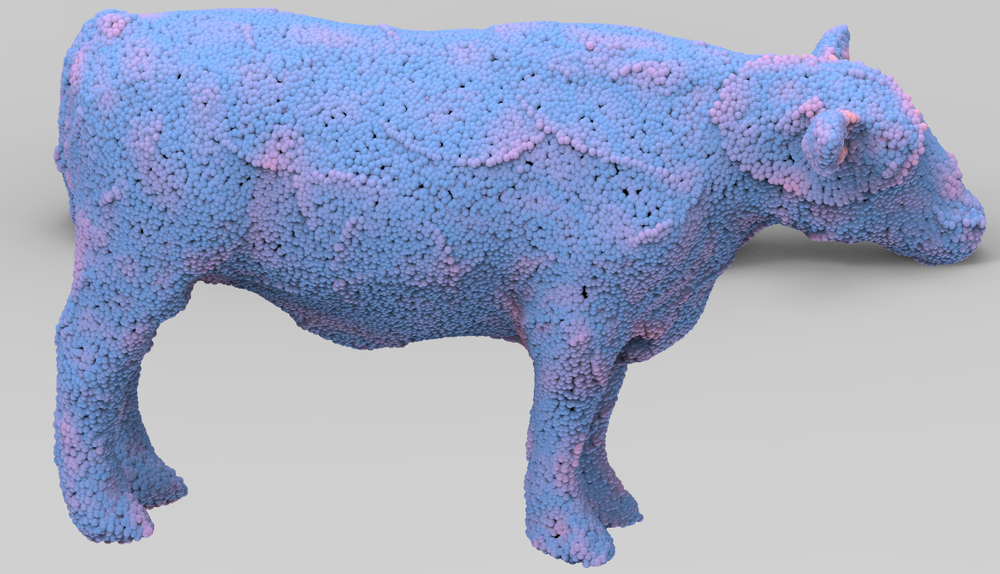
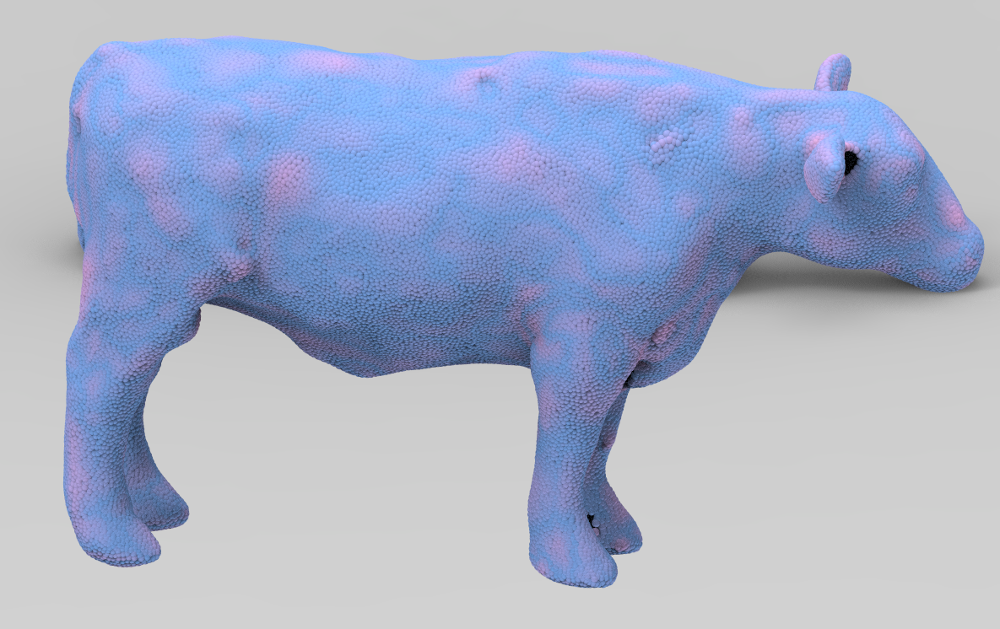
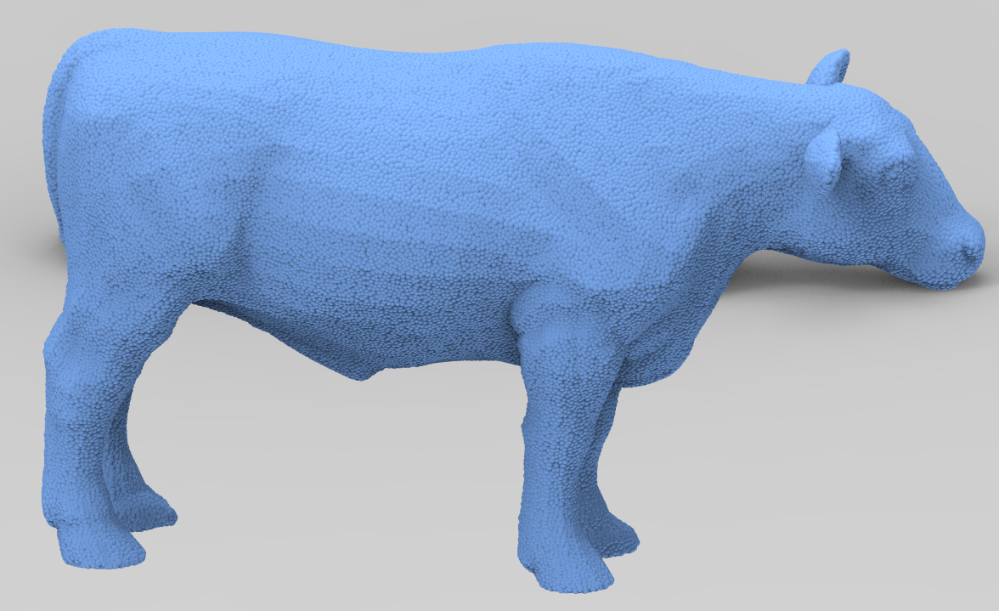

01Training
Clean-Prior Distillation HGCPD
A gradient-frozen teacher, updated by an exponential moving average, transfers clean-code assignments and multi-scale structural cues to a masked noisy student.
Point cloud denoising
Removing measurement noise while preserving the geometric details that define a shape.
Qualitative comparison
The noisy input, four denoising methods, and ground truth shown from a rotating viewpoint.

The problem and approach
Point cloud denoising must remove measurement noise without erasing fine geometric structure. Structural priors extracted from noisy features may mix these signals, while uniform feature fusion and coordinate updates may move points that are already reliable. We address the two problems separately.
Hierarchical Geometry-Aware Clean-Prior Distillation (HGCPD) transfers clean structural knowledge from a gradient-frozen teacher, updated by an exponential moving average, to a masked noisy student. Its targets include clean-code assignments and multi-scale feature and geometry cues. Noise-Adaptive Structural Restoration (NASR) regulates decoder skip features and pointwise residuals with a Noise-Aware Structural Refinement Module (NSRM) and an Update-Gated Residual Head (UGRH).
The teacher, masked branch, and clean codebook are used only during training, so inference retains the complete student restoration path. This combination reduces over- and under-denoising while preserving geometric detail. Across benchmarks, point densities, Gaussian noise levels, and unseen noise distributions, the model achieves lower mean denoising errors, with the clearest gains under dense sampling and strong corruption. Component studies indicate that clean-prior distillation and noise-adaptive restoration make complementary contributions.
How it works
Clean structural guidance during training, followed by noise-aware restoration of each point.
A gradient-frozen teacher, updated by an exponential moving average, transfers clean-code assignments and multi-scale structural cues to a masked noisy student.
The Noise-Aware Structural Refinement Module regulates decoder skip features, while the Update-Gated Residual Head controls pointwise coordinate updates.
At inference: the complete student restoration path runs without the teacher, masked branch, or clean codebook.

More visual results
Select an object to compare the noisy input, five denoising methods, and ground truth.
Open any image to inspect it at full size.






On a narrow screen, swipe horizontally to see all seven columns.